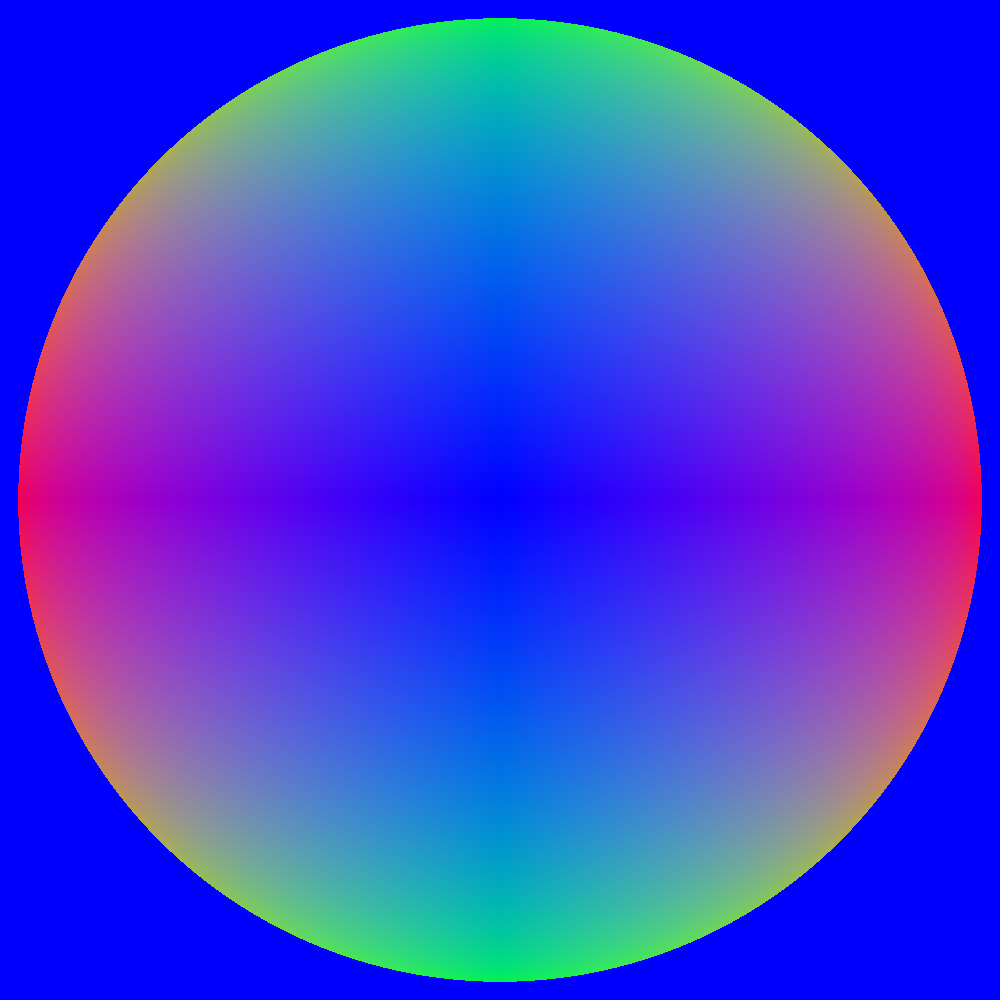
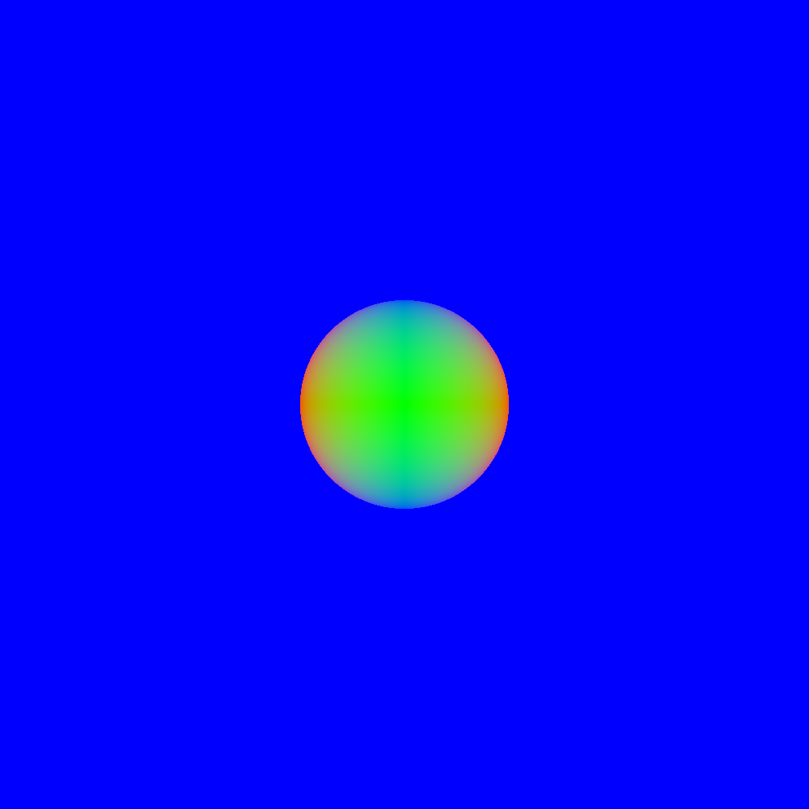
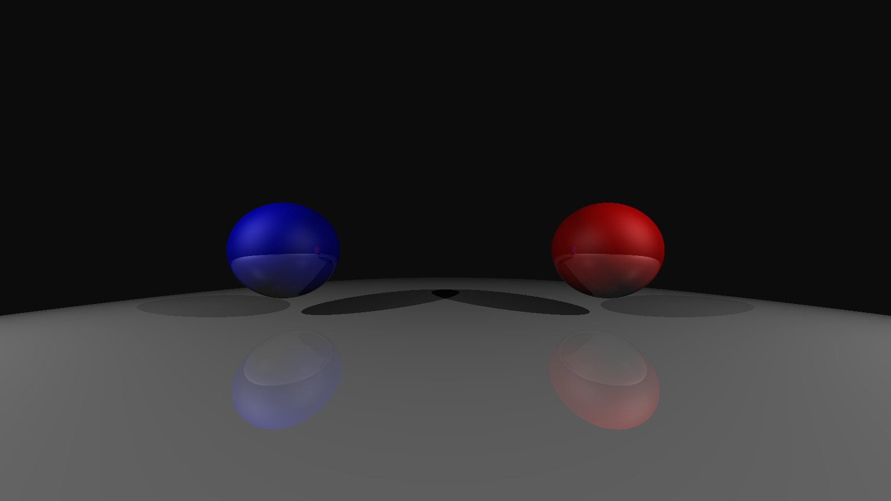
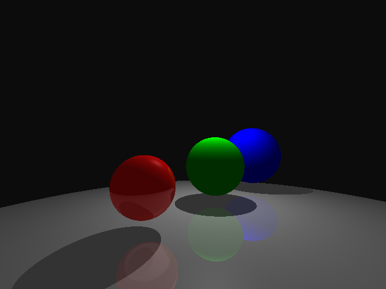
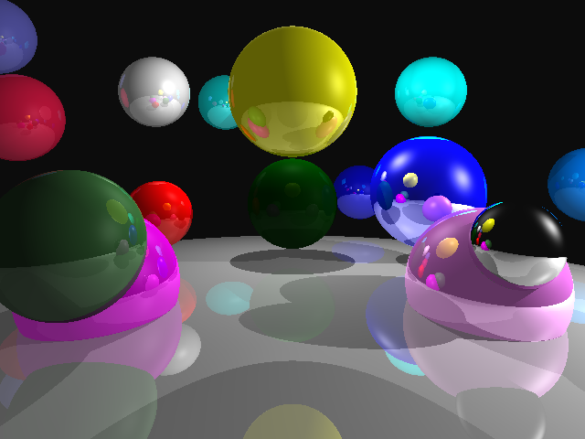

My ray tracer supports user specified camera placement, image resolution(aspect ratio), background color, and PNG output images.
The following images are rendered using the normal of the hit location as the color, this visualization is useful to see what scene geometry is doing if other shading methods are absent or inadequate.
Rendered with setup files (and with the early return from shading funciton for the normal):
#####################################
camera_pos: 0 0 4
camera_fwd: 0 0 1
camera_up: 0 1 0
camera_fov_ha: 15
output_image: setup1.png
film_resolution: 1000 1000
material: 1 1 1 1 1 1 0 0 0 5 0 0 0 1
sphere: 0 0 0 1
background: 0 0 1
#####################################
#####################################
camera_pos: 0 4 0
camera_fwd: 0 1 0
camera_up: 0 0 -1
camera_fov_ha: 45
output_image: setup2.png
film_resolution: 1000 1000
material: 1 1 1 1 1 1 0 0 0 5 0 0 0 1
sphere: 0 0 0 1
ambient_light: .1 .1 .1
background: 0 0 1
#####################################
The change in the color gradient over the rendered circle shows that the camera is viewing it from a different angle. The change in size of the cirlce between the two images despite being the same distance away shows that the field of view is wider in the latter.
My ray tracer supports basic sampling, ambient light, multiple point light sources, sphere primitives, hard shadows, diffuse and specular color, and reflection.
Here is an image of a scene featuring three spheres with diffuse and specular qualities, demonstrating shadows with multiple lights, reflections, lambertial diffuse surfaces, and phong specular surfaces:
###########################################################
camera_pos: 0 1 4
camera_fwd: 0 0 1
camera_up 0 1 0
camera_fov_ha: 45
output_image: lighting.png
ambient_light .25 .25 .25
film_resolution: 1600 900
background: .05 .05 .05
#ground
material: .75 .75 .75 .75 .75 .75 .3 .3 .3 32 .2 .2 .2 1.5
sphere: 0 -100 0 100
#red sphere:
material: 1 0 0 1 0 0 .3 .3 .3 5 0 0 0 1.5
sphere: -2.5 1 0 .75
#blue sphere:
material: 0 0 1 0 0 1 .3 .3 .3 5 0 0 0 1.5
sphere: 2.5 1 0 .75
point_light: 70 70 70 10 7 7
point_light: 70 70 70 -10 7 7
###########################################################
Here are my ray tracers renders of the two example scenes provided:
Notably absent from these renders are refractive properties. This is one of the main features I still need to add, but is omitted in this submission. The first example scene clearly displays ambient light on each of the spheres.
Working on this ray tracer has been fun. I used a lot of the code from HW3 to get going. Due to being pressed for time, I was between using the provided code here or reimplementing the lighting model in a stochastic path tracer I wrote in rust a few years ago. I decided to go with the C++ homework code so I didn't have to relearn rust and re-write the parser, and to stick with C++ for this class's work.
I didn't run into too much trouble during the development of it, some features required a bit of messing with PGA expressions to get working, but nothing too bad. The main issue with the raytracer right now is speed. It currently implements no acceleration structure, and takes quite a while to render. It also has no antialiasing, so the jaggies are pretty bad. Adding antialiasing would make it unacceptably slow, so an acceleration structure is high priority.
By my count, I've implemented 11 of the 5-point features: (cam placement, film res, aspect ratio), background colors, png output, spheres, ambient lights, point light sources, shadows, multiple light sources, basic sampling, color/specularity, and reflection. Since, I'm turning this in a day late, I'm just shooting for full points.
A tar.gz containing the project files and a x86-64 linux executable can be found here: macle119_proj3.tar.gz
Additionally, the code may be perused at this sites parent repository: https://github.com/Kholodets/CSCI_5607/tree/main/proj_3